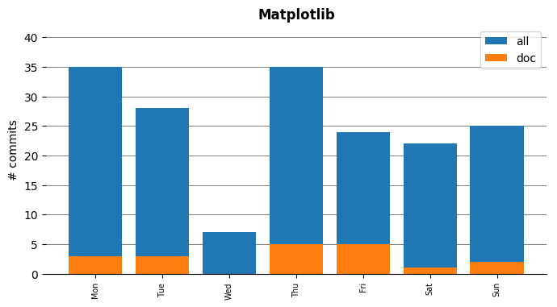

Matplotlib
- Documentation matplotlib.org
- Github organization https://github.org/matplotlib/matplotlib
- Docathon project https://github.com/matplotlib/matplotlib/projects/1
- Description Matplotlib is a Python 2D plotting library which produces publication quality figures in a variety of hardcopy formats and interactive environments across platforms. Matplotlib can be used in Python scripts, the Python and IPython shell, the jupyter notebook, web application servers, and four graphical user interface toolkits. Matplotlib tries to make easy things easy and hard things possible. You can generate plots, histograms, power spectra, bar charts, errorcharts, scatterplots, etc., with just a few lines of code
Activity
